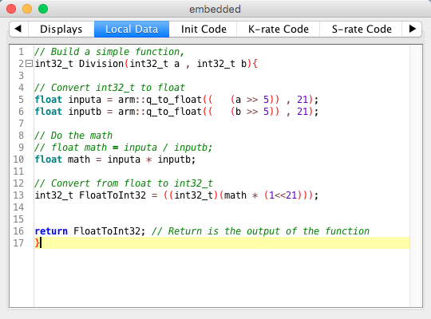

Hi,
I'm sure I'm missing something obvious,
but I cannot grasp what is happening here.
I'm trying to multiply float values from a dial....
This is what I get:
{kind=link}
Does someone know what's happening here?
Really confused 
Thanks!!

Hi,
I'm sure I'm missing something obvious,
but I cannot grasp what is happening here.
I'm trying to multiply float values from a dial....
This is what I get:
Does someone know what's happening here?
Really confused
Thanks!!
Not sure what’s going on there, could it be down to execution order, left to right, top to bottom, does it correct itself when everything is on the same line?
the names of the inputs&controls are a bit misleading. All the controls are based on 32bit integers, not floats, while the display readouts can be given in integers or as fractional. The controls you show go from 0 to ((1<>32) before sending it out as the outcome in 32bits.
so when using the factory multiply function and multiplying something with the fractional control, you should put the fractional control to 64 to let the other come out unchanged. So you should see 64 as being 1x.
If you'ld bitshift the outcome with 6 bits (<<6 = x64) it would work as a normal multiply function BUT!!!! This will also make it go over 32bit at high values, causing the value to wrap around within the 32bit range as it cannot save any bits beyond the 32bit (also, the 32th bit is used as a sign, so positive max range for a bipolar control is actually 31bit. So you actually cannot go beyond <<4 without the wrapping to kick in).
Inside a module you can work around this using 64bit values, but the outputs can't go over 32bit, so you'll have to either downshift the outcome to stay within 32bits or output the 64 bits as two 32bit values which you can then later take together as one value inside another module, storing them into a 64bit value again.
Thank you for your insight @SirSickSik. That's really helpful. I always forget Axoloti is all about bit shifting under the hood!!!
But I just can't help regarding this behavior as a bug...
The module should multiply 2 fractional inputs no?
Just like the integer multiply module....multiplies integers
If I get it right, what you are describing (putting the fractional control to 64, as being 1x) is what a mixer module with a bus input is doing...
So then my question, I guess, is:
How to multiply 2 fractional values?
Thanks!!
I've made an object that does k-rate division. I think it should be fairly easy to make it into a multiply object.
I did not try this for multiplication, but it works for division. I do think it will work for multiplication too.
Basically it's a simple function that converts int32_t to float, then does some float math and then convert it back to int32_t again.
Float Multiplication.axp (2.4 KB)
The function:

Anyway, try it 
Thanks a lot @jaffasplaffa.
Unfortunately multiplication doesn't work... It spits out very small values.
Division works perfect indeed!!
When I gain them 1000 times it's close, but slightly off.
Turns out steps of 0.5 is enough resolution for the multiplication factors that I need right now...
So I'm going for a more drastic conversion for now.
it's not a bug but yes, you are right that it's the same operation as the mixer module (also the vca/gain module).
Thing is that if you'ld be actually be multiplying these values like integers, you'll get huge numbers that wouldn't fit the 32bit, so the scaling is actually needed to make it usable. In the start I had some problems with this too, but I soon grew accustomed to it.
If you want to multiply two fractional values so that when the display shows "3.00" and you multiply this together so it comes to "9.00", just multiply the total by an integer 64.
As pr. usual in Axoloti world I forgot some bit shifting.
Fixed and tested and the object now works perfectly for multiplication.
I added << 10 for the output in the K-Rate code section.
Here it is:
Float Multiplication.axp (2.4 KB)
For future projects in Axoloti world, if you get numbers that looks like garbage or are out of range, always try bit shifting in either >> or << direction and see what comes up. If you are sure your math is right, then it's very often some bit shifting issue.
Wow, thanks a lot!!! That's great.
Thank you for the patch and the useful tips.
This community just rocks!
Perhaps a bit offtopic, but certainly related: does anyone know why fixed point 32-bit integers were chosen as the native format for the Axoloti and not floats? Since the Cortex-M4 CPU core handles floats natively, there's no penalty to using them, and it would simplify situations such as on that is the subject of this thread.
Not an expert here, but I guess this paragraph is part of the answer:
The real determinant of quality in audio DSP is the skill
of the programmers. They must devise accurate and efficient algorithms; the better their understanding of the (sometimes- arcane) math, the better the algorithm; the better the algorithm, the better the results. Fixed-point processing delivers a load of responsibility to the hands of the developer. It also delivers an equal amount of flexibility. A talented engineer with a good grasp of exactly what is required of a DSP product can fashion every detail of a given function down to the last bit. This is not so with floating-point designs. They offer an ease of program- ming that is seductive, making them popular when engineering talent is limited, but not the best choice. On one hand it is easier to program but on the other hand it is less controlled as to the final results — and, as we all know, that is what is important.
from:
Yep, that is one good point in favour of fixed-point arithmetic: if you know the range and resolution of your numbers, you don't need float. And if you don't know your numbers, what the heck are you doing?
But these days not all DSP code is written by professionals for serious applications. Hobbyists usually want a more playful, interactive approach: just try it and see what happens. That is easier with float, especially as most programming languages do not support fixed-point math, so that the source will be filled with bit-shifting and other trivialities that distract from what the code is actually supposed to do.
Another point is the lower resolution: with integer you have 32 bits of resolution (but you have to always remember where the decimal point is), with float it is only 24, because the other 8 bits are used to keep track of the decimal point during runtime. A lazy programmer makes more work for the processor.
Also, with a multitasking OS all processor registers have to be saved and restored at each context switch. The FPU has a lot of registers, so using the FPU would add a lot of overhead. The only way around that would be if only one process was allowed to use the FPU. Then the FPU registers would belong to this one process alone, so there would be no need to save and restore them. AFAIK the OS does not support this (it would need some support from the compiler too).
But a point here is that the STM32F4 used in the Axoloti supports floats natively; there are lots of objects which start by converting the fixed-point Axoloti signals to floats and vice versa for the outputs, then do the internal processing in floats. So the CPU supports it off the bat, and at least when it comes to the limited experiments I've done, without any performance loss (in terms of CPU performance).
Furthermore, the Axoloti is precisely directed at the hobbyist market where ease of use would prevail over maximal precision.
But perhaps the original reason for choosing fixed point is the point made in the referenced Rane article - fixed-point offers more flexibility and it was thought important when the Axoloti was concepted.
Found this while digging around the factory patches. In the custom object there's an f*f algorithm. It sounds like everything has already been accounted for in this thread but figured I'd drop in in case anyone was interested/hadn't seen it yet. The patch is jt/devel/float_workbench.axp.
Anything DSP related apart from the end result still flies over my head 
Interesting, wonder why it appears in mine. Here's the patch, I hope that object works. If it doesn't let me know what I can do to make it so.
float_workbench.axp (4.6 KB)
And the other patches in that folder:
cic_oscillator_workbench.axp (8.9 KB)
divider_organ.axp (77.4 KB)
filter-4pole-test.axp (14.4 KB)
filter-4pole-v2.axp (22.9 KB)
pdm_workbench.axp (13.9 KB)
rhodos.axp (7.2 KB)
updownsampler_x4.axp (11.2 KB)
{kind=link}
{kind=link}
{kind=link}